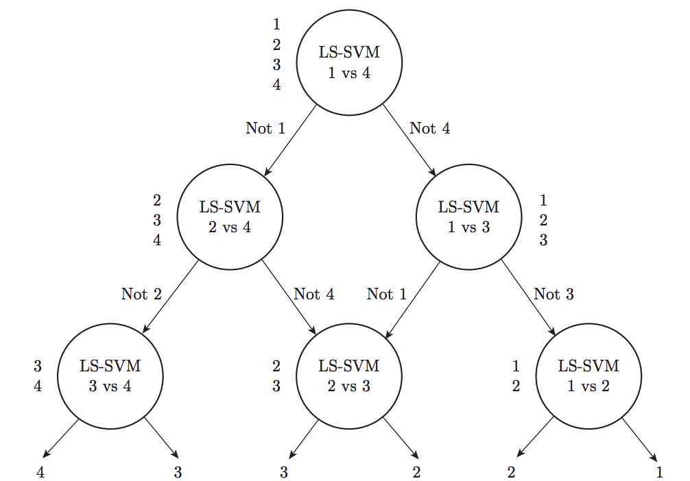
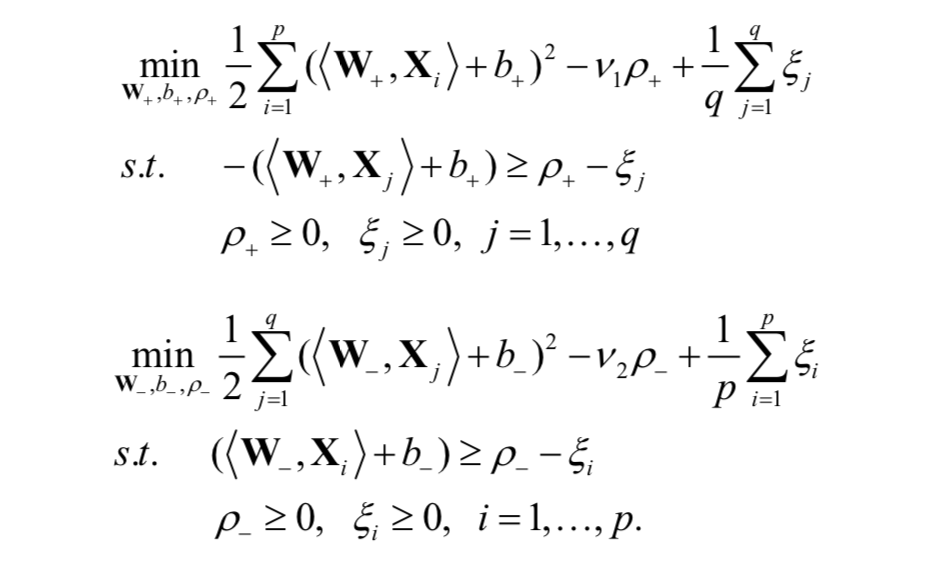

News
- In the field of fintech, there are many practices that enable business development.
|
|
Research
I'm interested in machine learning, statistics, deep learning, finance and educational finance. I pay more attention to the applications of data science in various fields.
|
| 
|
Least squares DAGSVM for multiclass classification
Haoyu Wu, Zhijian Zhou
Journal of Information and Computational Science, 12:18 (2015)
bibtex
We propose a new algorithm for multiclass classification called Least Squares DAGSVM (LS-DAGSVM), which has less computing time, comparable accuracy and better performance compared to other algorithms.
|
|  |
A v-Twin Support Tensor Machine
Huiru Wang, Haoyu Wu, Zhijian Zhou
International Conference on Information Engineering and Communications Technology, (IECT 2016)
bibtex
We formulate v-TSTM, which separates samples in the tensor space with two non-parallel hyperplanes, and the pair of parameters (v) have theoretical interpretation which are used to control the bounds of the fractions of support tensors and the error margins.
|
|
I like photography and share my photos with you.
|
|